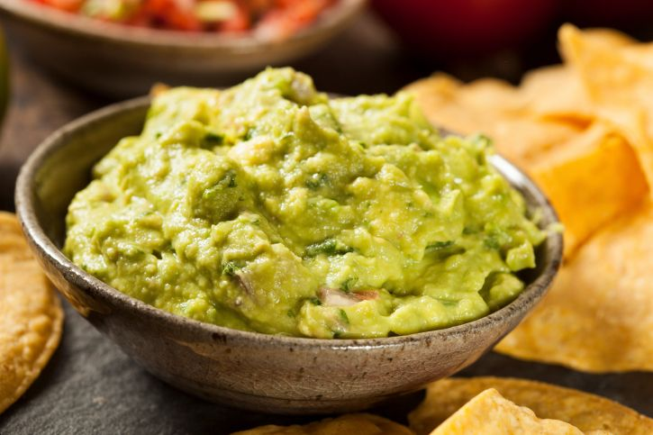

Guacamole

Description
You can make this avocado salad smooth or chunky depending on your tastes.
Upgrade your cutting boards using our guide to
the best cutting boards on the market, then use them to prepare our favorite recipes.
Ingredients
- 3 avocados - peeled, pitted, and mashed
- 1 lime, juiced
- 1 teaspoon salt
- ½ cup diced onion
- 3 tablespoons chopped fresh cilantro
- 2 roma (plum) tomatoes, diced
- 1 teaspoon minced garlic
- 1 pinch ground cayenne pepper (Optional)
Ingredients
- Prepare avocados
- Mash avocado
- Add in remaining ingredients:
- Toss: toss mixture together and serve with tortilla chips!